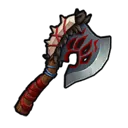

Kutelo de Kodiak
Machado · Tier 10 · Nível 32
Pode dividir qualquer coisa... exceto dois berserkers enormes apaixonados.
Atributos
Ataque
460
Vida
14
Economia
Valor
685.000
Tempo de fabricação
10h 20min
XP do comerciante
74.500
Trabalhadores: Carpinteiro 26, Mestre 22, Ferreiro 19
Receita


Marcos do projeto
6
Tempo de fabricação -20%
16
-64 Madeira
28
Valor +25%
45
-19 Madeira de ferro
70
Chance de qualidade +1